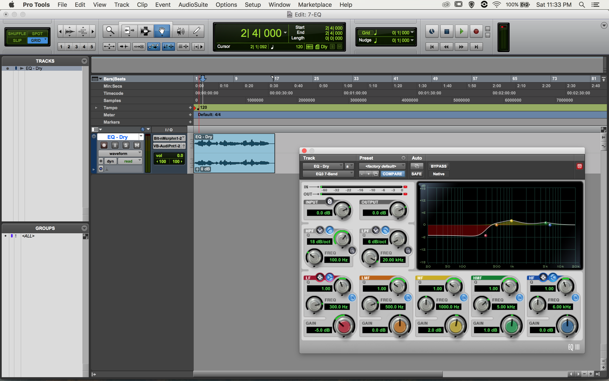
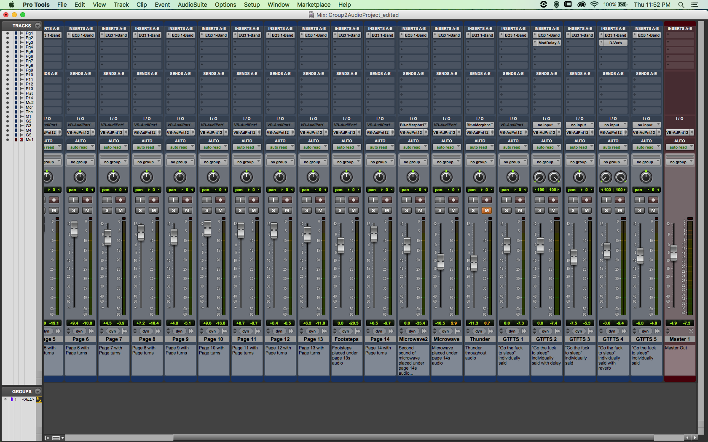
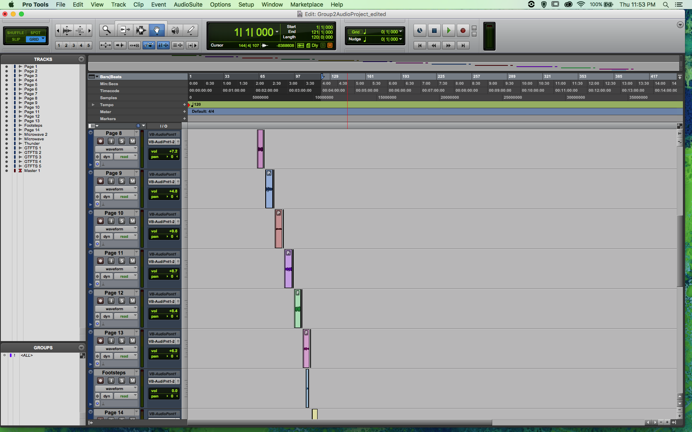
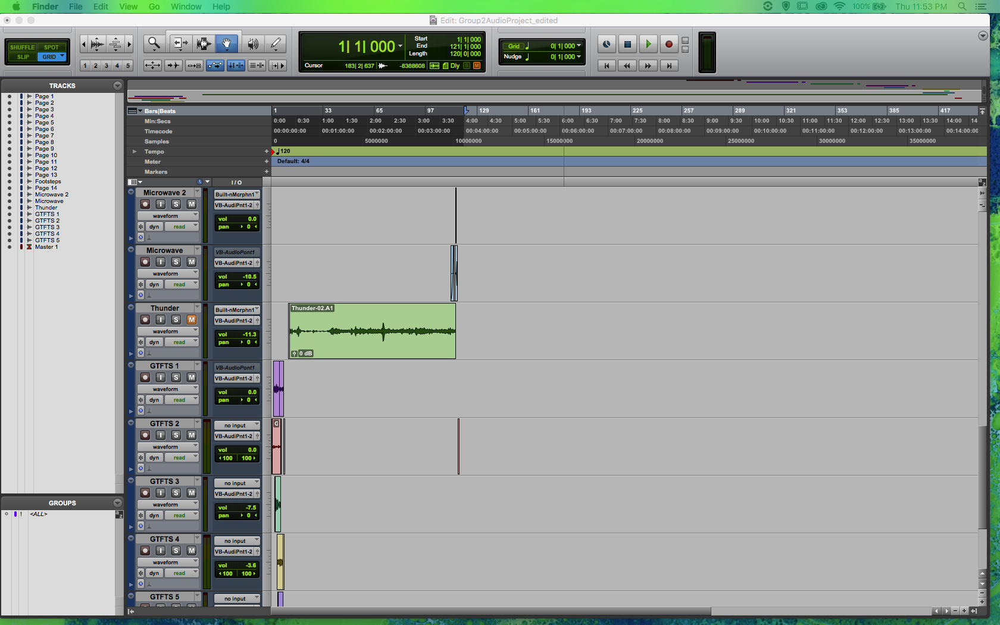
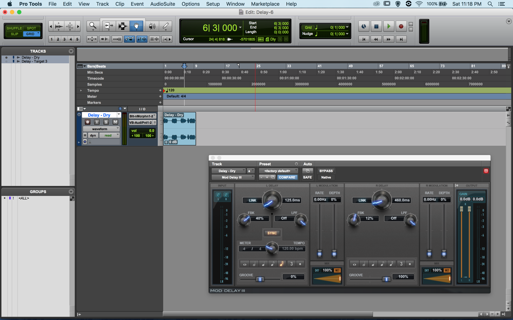
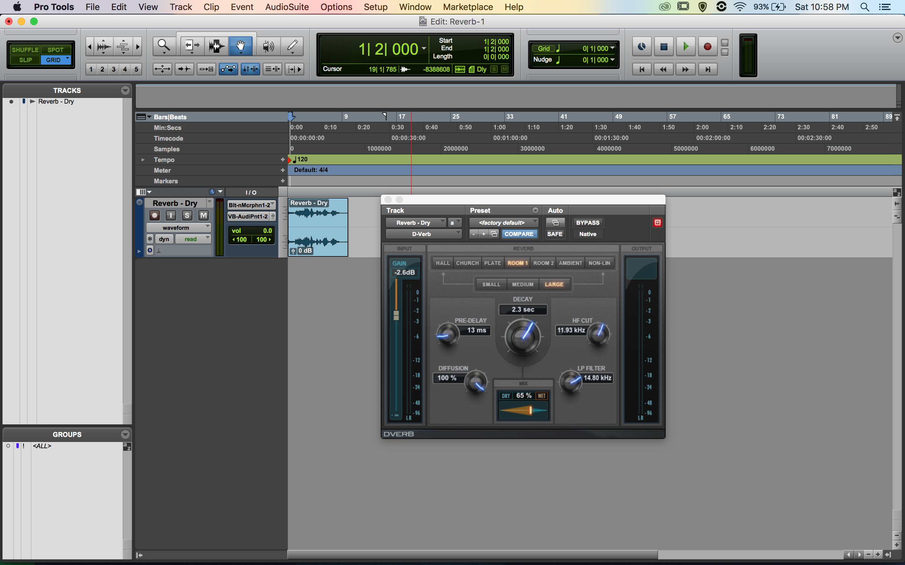

Learning how to add an equalizer to a small audio clip.

Layout of ProTools. I had different instruments next to eachother and I added them into groups so when you edit one instrument, the changes effect the others in the group.

Layout of ProTools with audio clips in order to be played.

Another layout of ProTools with audio clips in order to be played.

Learning how to add delay to a small audio clip.

Learning how to add reverb to a small audio clip.